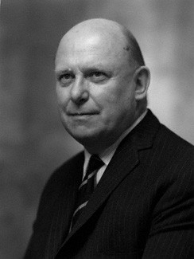
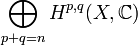
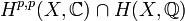

Hodges förmodan

Hodges förmodan, av matematikern William Vallance Douglas Hodge, är ett problem i algebraisk geometri. Den bygger på att man kan uppskatta en komplicerad geometrisk form med hjälp av sammansättningar av enklare former. I och med att metoden utvecklats i sitt användande har det varit nödvändigt att tillföra delar som saknar geometrisk tolkning. Låt X vara en projektiv, icke-singulär algebraisk varietet över de komplexa talen. Då finns de Rhamkohomologigrupper Hn(X,C) som har en hodgedekomposition

Hodges förmodan handlar om de rationella klasserna i diagonalen i denna dekomposition, alltså gruppen

av hodgeklasser. Nämligen, varje algebraisk cykel Z av kodimension p i X ger upphov till en kohomologiklass i H2p(X,Z) vars bild i H2p(X,Z) man kan visa är av typ (p,p). Därför finns en homomorfi från gruppen av cykler av kodimension p till gruppen av (p,p)-hodgeklasser. Hodges förmodan säger nu att varje hodgeklass är en rationell linjärkombination av algebraiska cykler.
Foto: Wikipedia